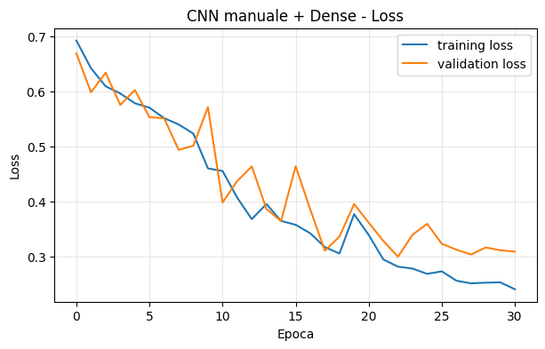
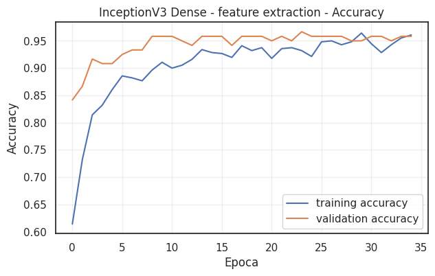
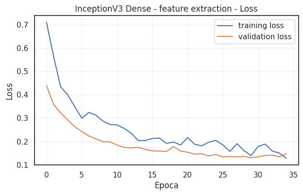
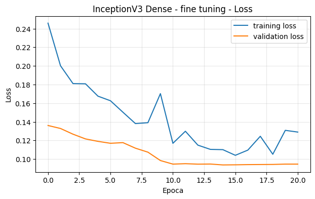
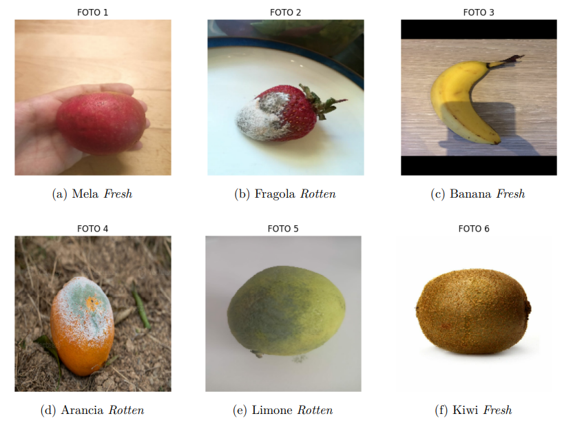

Automazione Riconoscimento Frutta Ammuffita
Applicazione pratica di Modelli CNN & Transfer Learning
IN SINTESI:
In questo progetto di gruppo sviluppiamo una pipeline di Image Recognition per la classificazione binaria (Fresh vs Rotten) mirata a individuare muffa e marciume indipendentemente dal tipo di frutto.
Su un dataset costruito manualmente di 800 immagini (banane, fragole, mele e pere) confrontiamo 7 architetture: due estrattori di feature (CNN manuale vs InceptionV3 pre-addestrata su ImageNet) combinati con tre classificatori (Dense Layer, KNN, SVM), più un modello benchmark con Fine-Tuning.
I Risultati chiave:
- Modello migliore (
InceptionV3 Fine-Tuned + Dense): raggiungendo un’accuracy del 97,50% sul test set (solo 3 errori su 120 immagini). - Impatto del tipo di classificatore: a parità di feature estratte, la SVM supera sistematicamente KNN e Dense su entrambe le reti congelate (90,00% con CNN manuale; 95,83% con InceptionV3), mentre KNN soffre l’elevata dimensionalità accumulando 17 falsi negativi su InceptionV3.
- Generalizzazione: utilizzando nuove immagini con sfondi diversificati, con diversi livelli di rumore o con nuovi tipi di frutta (arancione, limone e kiwi) i modelli con Transfer Learning ottengono i risultati migliori generalizzando correttamentre 5 volte su 6.
- Analisi degli errori: la classe Rotten risulta la più complessa di riconoscere, specialmente quando la muffa è piccola, periferica o di colore simile alla buccia del frutto.
Strumenti utilizzati: Python, TensorFlow / Keras, InceptionV3, Scikit-Learn, GridSearchCV, NumPy.
Il problema: spreco alimentare e controllo qualità visivo
La riduzione degli sprechi alimentari rappresenta una sfida prioritaria tanto per le filiere produttive quanto per i consumatori: secondo il rapporto Il Caso Italia 2026 dell’Osservatorio Waste Watcher, in Italia vengono sprecati 79,14 grammi di cibo al giorno pro capite, per un impatto economico superiore ai 7 miliardi di euro e oltre 5 milioni di tonnellate annue lungo l’intera filiera.
Per affrontare questo problema in chiave data-driven, abbiamo impostato un sistema di Image Recognition come classificazione binaria (Fresh / Rotten) anziché multiclasse per singola specie di frutto. Questa scelta permette di ridurre la complessità campionaria (necessario per costruire un campione manualmente) e per forzare la rete ad apprendere pattern trasversali di muffa e marciume comuni a frutti diversi.
L’esperimento confronta sistematicamente 6 combinazioni base (2 strategie di Feature Extraction \(\times\) 3 classificatori) più un settimo modello rifinito con Fine-Tuning come benchmark:
| Classificatore | Feature Extraction: CNN Manuale | Feature Extraction: InceptionV3 (congelata) | Feature Extraction: InceptionV3 (Fine-Tuning) |
|---|---|---|---|
| Dense Layer (end-to-end) | CNN + Dense | InceptionV3 + Dense | InceptionV3 (tuned) + Dense |
| K-Nearest Neighbors (KNN) | CNN + KNN | InceptionV3 + KNN | — |
| Support Vector Machine (SVM) | CNN + SVM | InceptionV3 + SVM | — |
Costruzione del dataset e pre-processing
La raccolta e la pulizia dei dati hanno costituito una delle fasi più critiche del progetto. Per ottenere un dataset controllato ma realistico, sono state raccolte 200 immagini (100 fresche e 100 ammuffite) per ogni specifica tipologia di frutto (banana, fragola, mela e pera) arrivando a 800 immagini totali.
Per costruire un dataset coerente e bilanciato è stato utilizzato una modalità di acquisizione mista tra Google Image e Pinterest + foto realizzate in autonomia tramite smartphone. procedure di controllo e data cleaning sono state essenziali per garantire integrità delle etichette.
Data Augmentation è stata impiegata per amentare la variabilità del dataset e diminuire l’overfitting. Il dataset è stato diviso in Train 70% / validation 15% / Test 15% assicurandone perfetto bilanciamento frutto + classe per ogni partizione.
.png)
Architetture a confronto: CNN manuale e Transfer Learning
Per valutare l’impatto della qualità delle rappresentazioni visive su un dataset di dimensione contenuta, abbiamo messo a confronto una rete convoluzionale semplice addestrata da zero con una rete profonda pre-addestrata su ImageNet.
1. Estrattori di feature: CNN manuale vs InceptionV3
CNN Manuale (~143 mila parametri): costruita in modo compatto con 4 blocchi convoluzionali crescenti (16, 32, 64, 128 filtri con kernel \(3 \times 3\), padding per preservare i bordi e attivazione ReLU \(f(x)=\max(0,x)\)), ciascuno seguito da Max Pooling (\(2 \times 2\)). Dopo l’ultimo blocco sono stati applicati Dropout (0.3) per la regolarizzazione e GlobalAveragePooling, che comprime la mappa \((14 \times 14 \times 128)\) in un vettore compatto di 128 feature.
Transfer Learning con
InceptionV3(>22 milioni di parametri): caricata con i pesi pre-addestrati su ImageNet escludendo la testa di classificazione originale (include_top=False) per sfruttarne le rappresentazioni visive profonde di bordi, texture e colori.Fine-Tuning parziale: in aggiunta alla versione congelata, abbiamo sbloccato esclusivamente gli ultimi layer di InceptionV3 riaddestrandoli con un learning rate ridotto sul classificatore Dense, così da adattare la rete al dominio specifico senza deteriorare le conoscenze pregresse (incremento della validation accuracy da ~0,95 a ~0,98).
2. I tre tipi di classificatori
Per confrontare equamente i classificatori a parità di rappresentazione, abbiamo applicato il Layer Freezing. I tre classificatori in coda:
Dense Layer : addestrato end-to-end con backpropagation, loss Binary Cross-Entropy, ottimizzatore Adam (\(\text{lr} = 0.0005\)) ed EarlyStopping sulla validation loss (pazienza di 8 epoche con ripristino dei pesi migliori). L’output usa l’attivazione Sigmoide per restituire la probabilità della classe positiva: \[ a_j = \sigma(z_j) = \frac{1}{1 + e^{-z_j}} \in [0, 1], \qquad z_j = \sum_{i=1}^{n} w_{ji} x_i + b_j \]
K-Nearest Neighbors: classificatore non parametrico ottimizzato tramite
GridSearchCVsull’F1-score pesato (esplorando \(k\), distanza Euclidea/Manhattan e pesatura uniforme/distanza). Sulla CNN manuale la configurazione ottimale risulta \(k = 5\), distanza Manhattan, pesi uniformi (F1 medio in CV = 0,891).Support Vector Machine : feature standardizzate e selezione tramite
GridSearchCV(3-fold CV) tra kernel lineare (\(C \in \{0.1, 1, 10\}\)) e kernel RBF (\(\gamma \in \{0.1, 0.01, 0.001\}\)). Sulla CNN manuale la combinazione migliore è kernel RBF con \(C = 10\) (F1 medio in CV \(\approx\) 0,9017).
Risultati finali
1. Confronto delle metriche sul test set
La tabella seguente riassume le prestazioni dei 7 modelli sul test set bilanciato (120 immagini: 60 Fresh e 60 Rotten):
| Feature Extractor | Classificatore | Accuracy | Precision | Recall | F1-Score |
|---|---|---|---|---|---|
| CNN Manuale | Dense | 0,8500 | 0,8504 | 0,8500 | 0,8500 |
| CNN Manuale | KNN | 0,8833 | 0,8850 | 0,8833 | 0,8832 |
| CNN Manuale | SVM | 0,9000 | 0,9072 | 0,9000 | 0,8996 |
| InceptionV3 (congelata) | Dense | 0,9167 | 0,9209 | 0,9167 | 0,9165 |
| InceptionV3 (congelata) | KNN | 0,8583 | 0,8896 | 0,8583 | 0,8554 |
| InceptionV3 (congelata) | SVM | 0,9583 | 0,9585 | 0,9583 | 0,9583 |
| InceptionV3 (Fine-Tuning) | Dense | 0,9750 | 0,9751 | 0,9750 | 0,9750 |
Il Transfer Learning conferma la propria superiorità complessiva, con InceptionV3 (Fine-Tuning) + Dense al primo posto (97,50%) e InceptionV3 + SVM come miglior modello senza sblocco dei pesi (95,83%). Tra i classificatori su reti congelate, SVM emerge costantemente come l’alternativa più efficace, mentre KNN peggiora passando alla rete più profonda (da 0,8832 a 0,8554 di F1) a causa della maledizione della dimensionalità sui vettori di feature estratti da InceptionV3.
.png)



.png)

2. Matrici di confusione e analisi dei falsi negativi
In un contesto di controllo qualità alimentare, i falsi negativi (frutta Rotten classificata erroneamente come Fresh) sono l’errore più critico:
| Modello | Classificatore | Vero Fresh | Falso Rotten | Falso Fresh (FN) | Vero Rotten | Errori Totali |
|---|---|---|---|---|---|---|
| CNN Manuale | Dense | 52 | 8 | 10 | 50 | 18 |
| CNN Manuale | KNN | 55 | 5 | 9 | 51 | 14 |
| CNN Manuale | SVM | 58 | 2 | 10 | 50 | 12 |
| InceptionV3 (congelata) | Dense | 58 | 2 | 8 | 52 | 10 |
| InceptionV3 (congelata) | KNN | 60 | 0 | 17 | 43 | 17 |
| InceptionV3 (congelata) | SVM | 58 | 2 | 3 | 57 | 5 |
| InceptionV3 (Fine-Tuning) | Dense | 59 | 1 | 2 | 58 | 3 |
L’ispezione visiva delle immagini misclassificate rivela come la classe Fresh venga riconosciuta con altissima affidabilità, mentre gli errori si concentrano sulla classe Rotten in due casi specifici:
- Estensione e posizione: macchie di muffa molto piccole rispetto al frutto o posizionate lateralmente.
- Cromatismo: muffe di colore marrone risultano significativamente più difficili da discriminare rispetto alle muffe bianche o verdi.
3. Generalizzazione su immagini reali e frutti mai visti
Per verificare la reale capacità di generalizzazione al di fuori del dataset, i tre modelli migliori sono stati testati su 6 nuove immagini caratterizzate da sfondi complessi (mani, piatti, terreno) e 3 tipologie di frutta mai viste in fase di training (arancia, limone, kiwi).

La tabella riporta la probabilità predetta di deterioramento \(P(\text{Rotten})\) : \(\ge 0,5 \rightarrow \text{Rotten}\) or \(< 0,5 \rightarrow \text{Fresh}\); in rosso le predizioni errate):
| Modello | Foto 1 (Mela Fresh) | Foto 2 (Fragola Rotten) | Foto 3 (Banana Fresh) | Foto 4 (Arancia Rotten) | Foto 5 (Limone Rotten) | Foto 6 (Kiwi Fresh) | Errori |
|---|---|---|---|---|---|---|---|
| CNN Manuale + SVM | 0,4392 | 0,9834 | 0,9231 | 0,9073 | 0,2831 | 0,9217 | 3 / 6 |
| InceptionV3 + SVM | 0,2413 | 0,9973 | 0,0024 | 0,9821 | 0,3310 | 0,4790 | 1 / 6 |
| InceptionV3 (tuned) + Dense | 0,0138 | 0,9915 | 0,0010 | 0,9841 | 0,0300 | 0,3609 | 1 / 6 |
Mentre la CNN manuale fatica a generalizzare oltre le quattro specie di addestramento (scambiando la buccia pelosa del kiwi per muffa e sbagliando anche una banana fresca), entrambi i modelli basati su InceptionV3 riconoscono correttamente sia l’arancia ammuffita su terreno sia il kiwi fresco. L’unico caso irrisolto per tutti i modelli è la Foto 5 (limone ammuffito), in cui il colore della muffa si confonde cromaticamente con la buccia del frutto.
4. Sviluppi futuri
L’esperimento evidenzia il limite principale di una CNN addestrata da zero su poche specie: l’elevata specializzazione sui soli frutti presenti nel training set.
Per evolvere il sistema verso un’applicazione industriale o consumer sono stati individuati tre sviluppi prioritari:
Espansione del dataset e passaggio a classificazione multiclasse: integrare nuove specie di frutta e altre categorie alimentari per identificare simultaneamente tipologia di prodotto e grado di deterioramento.
Riduzione della dimensionalità per classificatori basati su distanza: applicare la PCA (Principal Component Analysis) ai vettori di feature estratti da reti profonde per risolvere il degrado prestazionale del KNN.
Modellazione di stati intermedi: introdurre tecniche di Fuzzy Clustering per gestire in modo continuo le fasi di maturazione intermedia e migliorare il riconoscimento di muffe a basso contrasto cromatico (come nel caso del limone).